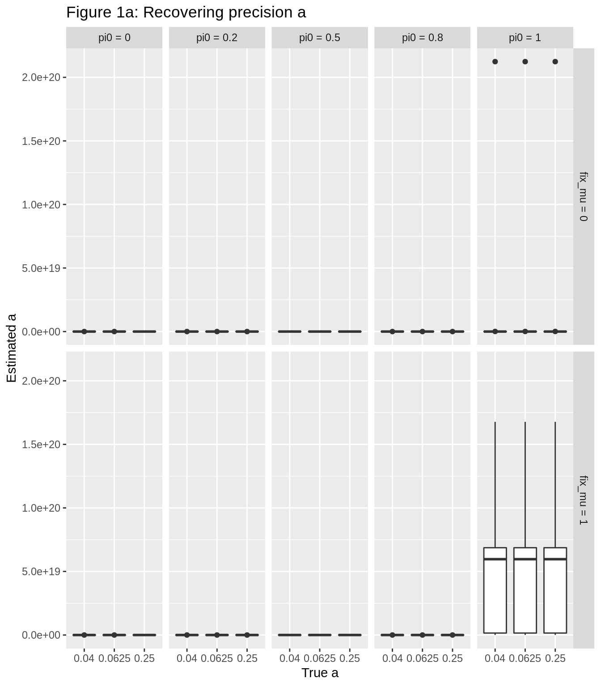
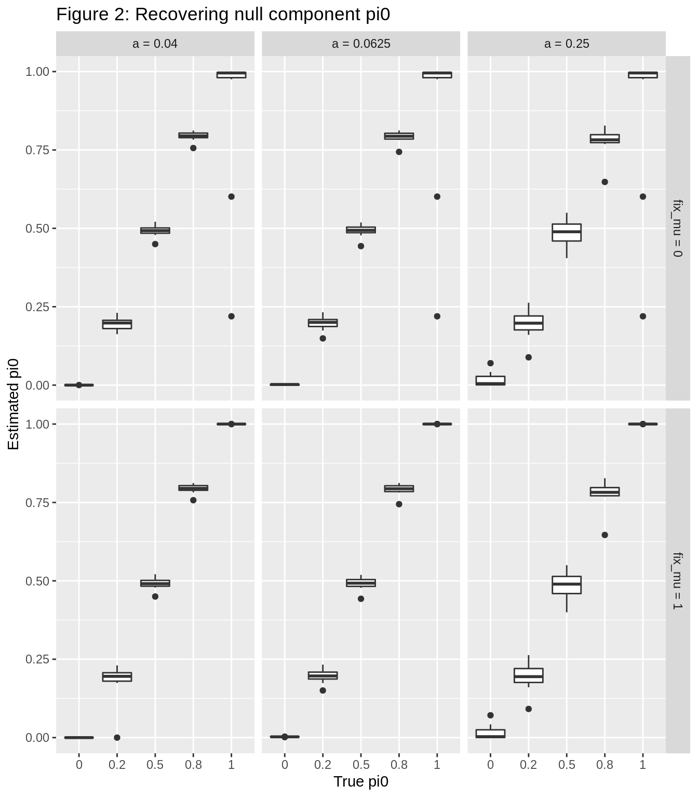
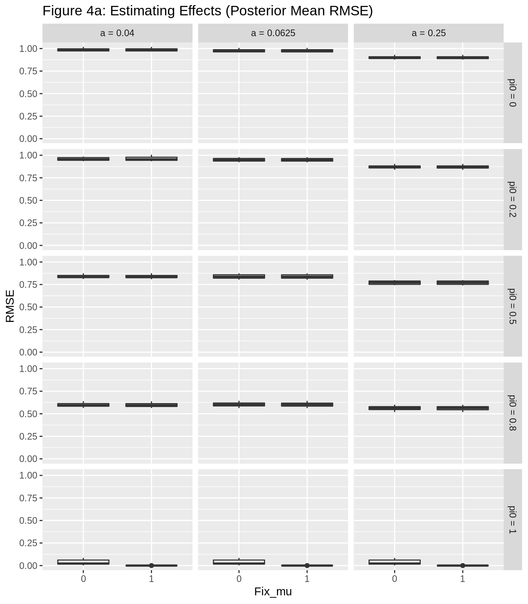

Normal Means DSC Analysis
Andrew Goldstein
October 30, 2018
Last updated: 2018-11-01
workflowr checks: (Click a bullet for more information)-
✔ R Markdown file: up-to-date
Great! Since the R Markdown file has been committed to the Git repository, you know the exact version of the code that produced these results.
-
✔ Environment: empty
Great job! The global environment was empty. Objects defined in the global environment can affect the analysis in your R Markdown file in unknown ways. For reproduciblity it’s best to always run the code in an empty environment.
-
✔ Seed:
set.seed(20181016)The command
set.seed(20181016)was run prior to running the code in the R Markdown file. Setting a seed ensures that any results that rely on randomness, e.g. subsampling or permutations, are reproducible. -
✔ Session information: recorded
Great job! Recording the operating system, R version, and package versions is critical for reproducibility.
-
Great! You are using Git for version control. Tracking code development and connecting the code version to the results is critical for reproducibility. The version displayed above was the version of the Git repository at the time these results were generated.✔ Repository version: fd100c5
Note that you need to be careful to ensure that all relevant files for the analysis have been committed to Git prior to generating the results (you can usewflow_publishorwflow_git_commit). workflowr only checks the R Markdown file, but you know if there are other scripts or data files that it depends on. Below is the status of the Git repository when the results were generated:
Note that any generated files, e.g. HTML, png, CSS, etc., are not included in this status report because it is ok for generated content to have uncommitted changes.Ignored files: Ignored: .sos/ Ignored: analysis/.sos/ Ignored: code/dsc-normalmeans/.Rhistory Untracked files: Untracked: .gitattributes Unstaged changes: Modified: .gitignore
Expand here to see past versions:
| File | Version | Author | Date | Message |
|---|---|---|---|---|
| Rmd | fd100c5 | Andrew Goldstein | 2018-11-01 | Changing knitr options |
| html | a7a8b89 | Andrew Goldstein | 2018-10-31 | Build site. |
| Rmd | 5d08c3d | Andrew Goldstein | 2018-10-31 | Adding log-lik plot |
| html | e81fb0b | Andrew Goldstein | 2018-10-31 | Build site. |
| Rmd | a37c30c | Andrew Goldstein | 2018-10-31 | Adding RMSE for theta |
| html | 7c5edd8 | Andrew Goldstein | 2018-10-31 | Build site. |
| Rmd | 30b7012 | Andrew Goldstein | 2018-10-31 | Making figures bigger |
| html | cb161f6 | Andrew Goldstein | 2018-10-31 | Build site. |
| Rmd | b8486de | Andrew Goldstein | 2018-10-31 | Fixing path to DSC data |
| html | 3225154 | Andrew Goldstein | 2018-10-31 | Build site. |
| Rmd | ebe38a1 | Andrew Goldstein | 2018-10-31 | Fixing path to DSC data |
| html | 32f2ade | Andrew Goldstein | 2018-10-31 | Build site. |
| Rmd | 8513b80 | Andrew Goldstein | 2018-10-31 | Adding DSC analysis workflowr file |
Introduction
This code analyzes the results of the DSC replications. Currently, only the point_normal prior is tested.
The point_normal prior assumes \[
\begin{aligned}
\theta_j \stackrel{iid}{\sim} \pi_0 \delta_\mu + (1 - \pi_0)\mathcal{N}\Big(\mu, \frac1a\Big) \\
x_j \stackrel{\perp}{\sim} \mathcal{N}\Big(\theta_j, s_j^2\Big)
\end{aligned}
\] By setting \(\mu := 0\), we can recover the case where there is a point-mass at 0. By setting \(\pi_0 := 0\), we can recover the case where there is no point-mass.
Analysis
# Load required packages
library(dscrutils)
library(dplyr)
library(tidyr)
library(ggplot2)
# load and reshape data
dscout = dscquery(dsc.outdir = "./code/dsc-normalmeans/normal_means",
targets = c("simulate.true_pi0", "simulate.true_a", "simulate.true_mu",
"eb.prior", "eb.fix_mu", "eb.g_pi0", "eb.g_a", "eb.g_mu",
"eb.loglik", "score.RMSE"))
dscout_wide = dscout %>% spread(score, score.RMSE)
View(dscout_wide)
Loading dsc-query output from CSV file.
Reading DSC outputs:
- simulate.true_pi0: extracted atomic values
- simulate.true_a: extracted atomic values
- simulate.true_mu: extracted atomic values
- eb.prior: extracted atomic values
- eb.fix_mu: extracted atomic values
- eb.g_pi0: extracted atomic values
- eb.g_a: extracted atomic values
- eb.g_mu: extracted atomic values
- eb.loglik: extracted atomic values
- score.RMSE: extracted atomic valuesWe replicate 10 times for all combinations of parameter values: \(\mu \in \{0\}\), \(\pi_0 \in \{0, .2, .5, .8, 1\}\), \(a \in \{1/25, 1/16, 1/4\}\), and we try both estimating \(\mu\) and fixing \(\mu = 0\). The standard errors \(s_j\) were all set to 1.
Parameter Estimation
In this section, we investigate our ability to recover the parameter values.
Figures 1-3 below show our attempts at recovering \(a\), \(\pi_0\), and \(\mu\), respectively. For figures 1-2, the top and bottom rows separate between the cases when \(\mu\) was fixed at 0 (bottom) or estimated (top). For figure 3, only the cases where \(\mu\) was estimated are shown.
labels_pi0 = character(length(unique(dscout_wide$simulate.true_pi0)))
for (i in 1:length(labels_pi0)) {
labels_pi0[i] = paste("pi0 = ", unique(dscout_wide$simulate.true_pi0)[i], sep = "")
names(labels_pi0)[i] = unique(dscout_wide$simulate.true_pi0)[i]
}
labels_a = character(length(unique(dscout_wide$simulate.true_a)))
for (i in 1:length(labels_a)) {
labels_a[i] = paste("a = ", unique(dscout_wide$simulate.true_a)[i], sep = "")
names(labels_a)[i] = unique(dscout_wide$simulate.true_a)[i]
}
labels_fix_mu = character(length(unique(dscout_wide$eb.fix_mu)))
for (i in 1:length(labels_fix_mu)) {
labels_fix_mu[i] = paste("fix_mu = ", unique(dscout_wide$eb.fix_mu)[i], sep = "")
names(labels_fix_mu)[i] = unique(dscout_wide$eb.fix_mu)[i]
}
ggplot(dscout_wide, aes(x = factor(simulate.true_a), y = eb.g_a)) +
geom_boxplot() + facet_grid(eb.fix_mu ~ simulate.true_pi0, labeller = labeller(simulate.true_pi0 = labels_pi0, eb.fix_mu = labels_fix_mu)) +
ggtitle("Figure 1: Recovering precision a") + xlab("True a") + ylab ("Estimated a")
Expand here to see past versions of unnamed-chunk-2-1.png:
| Version | Author | Date |
|---|---|---|
| 7c5edd8 | Andrew Goldstein | 2018-10-31 |
| cb161f6 | Andrew Goldstein | 2018-10-31 |
ggplot(dscout_wide, aes(x = factor(simulate.true_pi0), y = eb.g_pi0)) +
geom_boxplot() + facet_grid(eb.fix_mu ~ simulate.true_a, labeller = labeller(simulate.true_a = labels_a, eb.fix_mu = labels_fix_mu))+
ggtitle("Figure 2: Recovering null component pi0") + xlab("True pi0") + ylab ("Estimated pi0")
Expand here to see past versions of unnamed-chunk-2-2.png:
| Version | Author | Date |
|---|---|---|
| 7c5edd8 | Andrew Goldstein | 2018-10-31 |
| cb161f6 | Andrew Goldstein | 2018-10-31 |
ggplot(filter(dscout_wide, eb.fix_mu == 0), aes(x = factor(simulate.true_mu), y = eb.g_mu)) +
geom_boxplot() + facet_grid(simulate.true_pi0 ~ simulate.true_a, labeller = labeller(simulate.true_a = labels_a, simulate.true_pi0 = labels_pi0)) +
ggtitle("Figure 3: Recovering mean mu") + xlab("True mu") + ylab ("Estimated mu")
Expand here to see past versions of unnamed-chunk-2-3.png:
| Version | Author | Date |
|---|---|---|
| 7c5edd8 | Andrew Goldstein | 2018-10-31 |
| cb161f6 | Andrew Goldstein | 2018-10-31 |
From these plots, a few things become apparent. First, for larger values of \(\pi_0\), our estimates of \(a\) become highly inaccurate and extremely inflated. This is due to the estimated \(\widehat{\pi_0}\) being very slightly smaller than 1, which can result in inflated values of \(a\). I recommend that we add a check for this condition.
Second, for larger precisions (i.e. our non-null component is more concentrated near its mean), our estimation of \(\pi_0\) becomes inaccurate very quickly. Some further testing could be beneficial to test at what signal-to-noise ratios this method is reliable.
Third, when estimating \(\pi_0\), simultaneously estimating \(\mu\) can lead to more accurate estimates of \(\pi_0\), but can also be anti-conservative. In contrast, fixing \(\mu\) is often conservative in its estimates when the signal-to-noise ratio is small.
Fourth, when estimating \(\mu\), the method appears to return sensible estimates.
RMSE of Estimating Effects \(\theta_j\)
In this section, we look at the RMSEs of estimating the true effects, \(\theta_j\), using the posterior means supplied by the ebnm function.
Figure 4 below plots the RMSEs for all combinations of \(\pi_0\), \(a\), and whether or not we fixed \(\mu := 0\).
ggplot(dscout_wide, aes(x = factor(eb.fix_mu), y = score_theta)) +
geom_boxplot() + facet_grid(simulate.true_pi0 ~ simulate.true_a, labeller = labeller(simulate.true_a = labels_a, simulate.true_pi0 = labels_pi0)) +
ggtitle("Figure 4: Estimating Effects") + xlab("Fix_mu") + ylab ("RMSE")
Expand here to see past versions of unnamed-chunk-3-1.png:
| Version | Author | Date |
|---|---|---|
| e81fb0b | Andrew Goldstein | 2018-10-31 |
We can see that fixing \(\mu := 0\) doesn’t have much of an effect on the RMSE (with the obvious exception of when all effects are null, so our RMSE is 0). As expected, the RMSE is inversely related to \(\pi_0\), and inversely related to \(a\).
However, most cases have RMSEs well over 1, which is the expected RMSE for simply using \(x_j\) for \(\widehat{\theta_j}\) (since \(x_j \sim \mathcal{N}(\theta_j, 1^2))\).
Log-Likelihoods
In this section, we look at the log-likelihoods returned from the ebnm function.
Figure 5 below plots the log-likelihoods for all combinations of \(\pi_0\), \(a\), and whether or not we fixed \(\mu := 0\).
ggplot(dscout_wide, aes(x = factor(eb.fix_mu), y = eb.loglik)) +
geom_boxplot() + facet_grid(simulate.true_pi0 ~ simulate.true_a, labeller = labeller(simulate.true_a = labels_a, simulate.true_pi0 = labels_pi0)) +
ggtitle("Figure 5: Log-Likelihoods") + xlab("Fix_mu") + ylab ("log-likelihood")Expand here to see past versions of unnamed-chunk-4-1.png:
| Version | Author | Date |
|---|---|---|
| a7a8b89 | Andrew Goldstein | 2018-10-31 |
We can see that estimating \(\mu\) has little to no effect on the resulting log-likelihood.
Session information
sessionInfo()
R version 3.5.1 (2018-07-02)
Platform: x86_64-pc-linux-gnu (64-bit)
Running under: Ubuntu 18.04.1 LTS
Matrix products: default
BLAS: /usr/lib/x86_64-linux-gnu/blas/libblas.so.3.7.1
LAPACK: /usr/lib/x86_64-linux-gnu/lapack/liblapack.so.3.7.1
locale:
[1] LC_CTYPE=en_US.UTF-8 LC_NUMERIC=C
[3] LC_TIME=en_US.UTF-8 LC_COLLATE=en_US.UTF-8
[5] LC_MONETARY=en_US.UTF-8 LC_MESSAGES=en_US.UTF-8
[7] LC_PAPER=en_US.UTF-8 LC_NAME=C
[9] LC_ADDRESS=C LC_TELEPHONE=C
[11] LC_MEASUREMENT=en_US.UTF-8 LC_IDENTIFICATION=C
attached base packages:
[1] stats graphics grDevices utils datasets methods base
other attached packages:
[1] bindrcpp_0.2.2 ggplot2_3.1.0 tidyr_0.8.2 dplyr_0.7.7
[5] dscrutils_0.3.0
loaded via a namespace (and not attached):
[1] Rcpp_0.12.19 plyr_1.8.4 compiler_3.5.1
[4] pillar_1.3.0 git2r_0.23.0 workflowr_1.1.1
[7] bindr_0.1.1 R.methodsS3_1.7.1 R.utils_2.7.0
[10] tools_3.5.1 digest_0.6.18 evaluate_0.12
[13] tibble_1.4.2 gtable_0.2.0 pkgconfig_2.0.2
[16] rlang_0.3.0.1 yaml_2.2.0 parallel_3.5.1
[19] withr_2.1.2 stringr_1.3.1 knitr_1.20
[22] rprojroot_1.3-2 grid_3.5.1 tidyselect_0.2.5
[25] glue_1.3.0 R6_2.3.0 rmarkdown_1.10
[28] reshape2_1.4.3 purrr_0.2.5 magrittr_1.5
[31] whisker_0.3-2 backports_1.1.2 scales_1.0.0
[34] htmltools_0.3.6 assertthat_0.2.0 colorspace_1.3-2
[37] labeling_0.3 stringi_1.2.4 lazyeval_0.2.1
[40] munsell_0.5.0 crayon_1.3.4 R.oo_1.22.0 This reproducible R Markdown analysis was created with workflowr 1.1.1